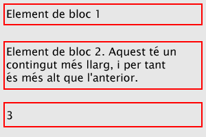
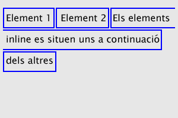

Secció 0: Introducció
4. Elements de bloc, elements inline
A diferents parts d'aquest curs es parla d'elements de bloc. Aquest és un concepte que sovint és desconegut pels dissenyadors que comencen, però que en moltes situacions resulta ser de gran importància. En aquest apartat provaré d'explicar-lo, intentant no complicar massa les coses. En tot cas una descripció exhaustiva queda fora de l'abast d'aquest curs.
Els elements de bloc/inline s'estudiaran amb més detall a la Secció 4.
Els elements HTML es poden dividir segons la seva visualització (display), que determina de quina manera els han de mostrar els navegadors. Hi ha diversos tipus de display, però en general podem dividir-los en dos grups de comportament ben diferenciat: els elements de bloc i els elements inline. Sense entrar en detalls, i procurant fer una descripció més que no pas una definició:
- Els elements de bloc es representen ocupant tota l'amplada disponible (en principi tota l'amplada del navegador), independentment de quin sigui el seu contingut. A més estan separats dels elements anterior i posterior per un espai en blanc. Exemples d'elements de bloc són H1, P, TABLE, UL o DIV.

Nota: aquesta descripció no és estrictament certa o si més no no és del tot precisa. Gràcies als style sheets podem modificar la separació dels elements de bloc respecte els seus veïns, així com fer que no ocupin tota l'amplada del navegador. Però la idea bàsica és la que acabem de veure, i en la majoria de casos els elements de bloc es comporten d'acord amb la mateixa.
- Els elements inline ocupen només l'amplada necessària per mostrar el seu contingut, i a més no estan separats dels seus elements veïns, sinó que es situen a la mateixa línia, un a continuació de l'altre. Exemples d'elements inline són A, IMG, EM, STRONG, B, I, U o SPAN.
La imatge anterior representa quatre elements inline ("Element 1", "Element 2", "Els elements inline es situen uns a continuació" i "dels altres") i de quina manera es disposen a la pàgina. Fixa't que cada element s'adapta a la mida del seu contingut. Així el quart element només ocupa una part de l'amplada del navegador, comportament ben diferent al dels elements de bloc (fixa't en el tercer element de l'exemple anterior). De forma semblant, el tercer element comença a la meitat de la primera línia, i s'estén fins al final del seu contingut, és a dir, fins gairebé el final de la segona línia.
Aquest és un esquema simplificat, però confio que serveixi per entendre quina diferència hi ha entre els dos tipus d'element. Al llarg del curs veurem que alguns estils CSS són aplicables només a elements de bloc, mentre d'altres ho són únicament a elements inline. De tota manera no serà fins a la Secció 4 que aquesta distinció prendrà una rellevància fonamental.
Com probablement pots deduir, un element inline no pot contenir un element de bloc (és impossible ocupar tot l'espai horitzontal disponible i alhora ajustar-se a l'espai requerit pel contingut). En canvi sí és possible la situació inversa, que un element de bloc contingui elements inline (per exemple que un paràgraf contingui imatges i links), i també que un element de bloc contingui altres elements de bloc (típicament un DIV que contingui paràgrafs, llistes, etc).
Una confusió molt habitual es dóna amb els elements DIV i SPAN, que condueix sovint a un ús equivocat dels mateixos, i el que és pitjor, a no utilitzar-los en les situacions on realment són adequats. Tots dos són elements sense format, és a dir, contenidors sense cap estil associat. La única diferència entre ells és que DIV és un element de bloc i SPAN un element inline. Consequentment l'element DIV pot agrupar diferents elements de bloc o inline, mentre que SPAN pot agrupar únicament text i altres elements inline. Pots pensar-los tots dos com a elements contenidors, recordant que DIV es comporta d'acord amb les regles dels elements de bloc (ocupació del màxim espai horitzontal disponible, separació respecte els elements veïns) mentre que SPAN ho fa d'acord amb les regles dels elements inline (ocupació d'un espai horitzontal ajustat al contingut, disposició adjacent als elements veïns). En tots dos casos l'objectiu és poder assignar un estil comú a tot el contingut del DIV o de l'SPAN. Com veurem a la Secció 4, els elements DIV i SPAN juguen un paper destacat en el 'Posicionament CSS'.
5. Signes convencionals